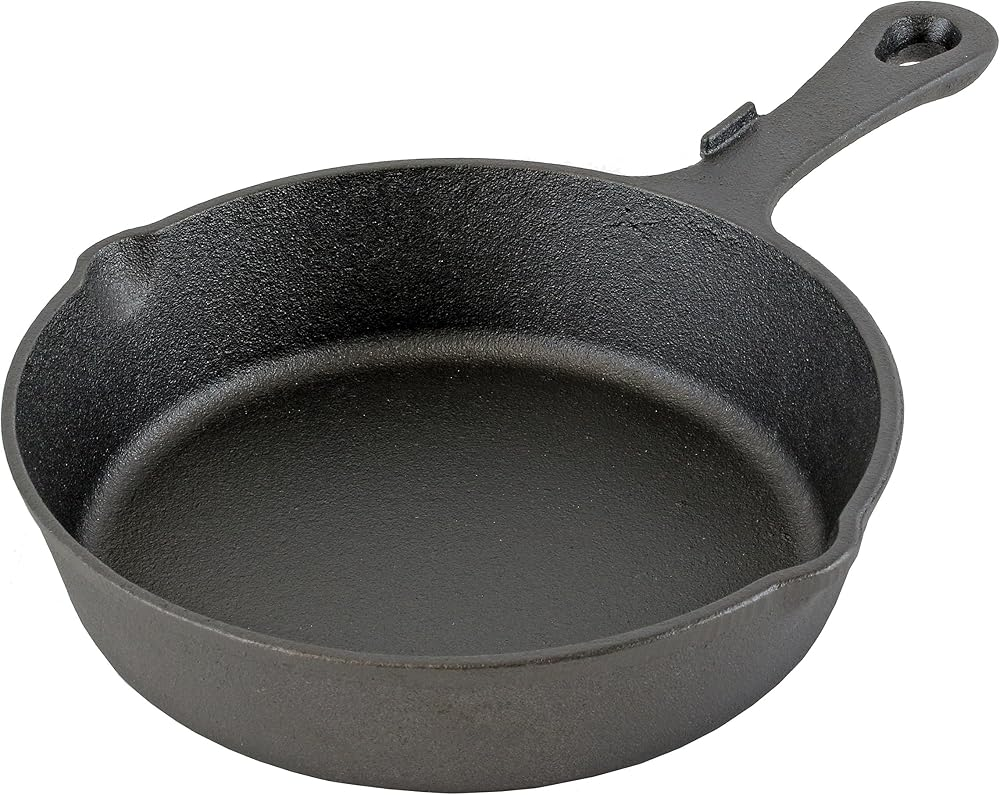
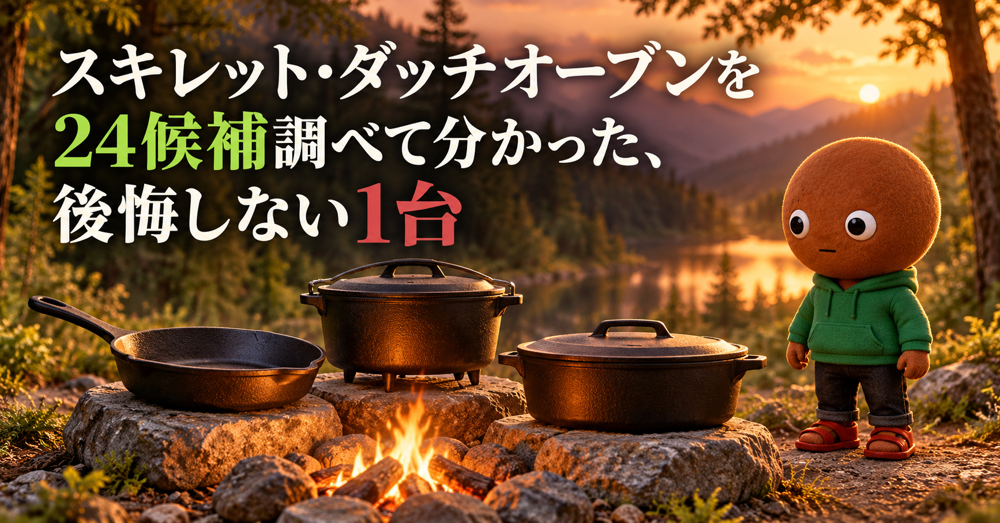
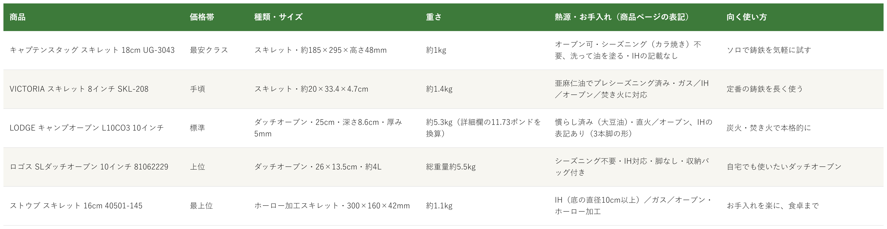

Amazonで見るスキレットとダッチオーブンの違いが分からず、手入れや重さで後悔したくない人へ
そのスキレット、
サイズと値段だけで選んでいませんか？
鋳鉄のスキレットとダッチオーブンを24候補調査。お手入れ・重さ・IH対応の違いを確認し、使い方が重複しない5商品を比較しました。
自分に合う1台を探す
この記事はAmazonアソシエイト・プログラムの参加者として、紹介料を得る場合があります（PR）。仕様は調査時点の情報です。
24候補から、使い方の違う5商品に絞りました。まずは気になる1つへ。向いている人・向いていない人と、低評価レビュー、手入れの注意もまとめています。
24候補を調査
5商品に厳選
低評価レビューも確認済み
結論から先に言うと：
スキレットかダッチオーブンか、お手入れ、重さ、IH。何を優先するかで1つを。
横にスワイプして、5商品を見比べる
選び方の基準は3つ
調べてわかったのは、基準は3つでした。
1つ目は「お手入れ（表面の仕上げ）」。鋳鉄は水に触れると錆びやすいため、油の膜で表面を守る「シーズニング」が必要とBE-PALは説明しています。今回の5商品は、亜麻仁油や大豆油で慣らし済みのもの（VICTORIA、LODGE）、シーズニング不要とされるもの（キャプテンスタッグ、ロゴス）、ホーロー加工のもの（ストウブ）に分かれました。ただし、シーズニング不要と書かれていても、キャプテンスタッグは洗って油を塗る手順があり、レビューには慣らしが必要だったという声もありました。
2つ目は「スキレットか、ダッチオーブンか」。スキレットは焼く調理が中心で、重さは約1kg〜1.4kgです。ダッチオーブンは蓋付きの深い鍋で、煮込みやパン、ご飯まで広がりますが、ロゴスの10インチは総重量約5.5kg、LODGEは約5.3kg（商品詳細欄の11.73ポンドをkgに換算）あります。約1kgから約5.5kgまで、約5倍の差がありました。
3つ目は「熱源と脚の有無」。Hondaのアウトドア情報は、脚付きのダッチオーブンは脚の下にも炭や薪を入れられる一方、IHでは使えないとしています。脚なしの中にはIH対応のものがあります。今回は、ロゴスが脚なしでIH対応、ストウブとVICTORIAもIHに対応と書かれています。家のコンロでも使うなら、脚なしでIH対応かを先に確認します。
比較表

価格帯・種類とサイズ・重さ・熱源とお手入れ・向く使い方の比較（価格帯は、調査時点のAmazon出品価格の順に付けた目安です。価格は変動が大きく、商品ごとに差があります。仕様は商品ページの表記です）
キャプテンスタッグ スキレット 18cm UG-3043
- 最安クラス
- スキレット・約185×295×高さ48mm
- 約1kg
- オーブン可・シーズニング（カラ焼き）不要、IHの記載なし
VICTORIA スキレット 8インチ SKL-208
- 手頃
- スキレット・約20×33.4×4.7cm
- 約1.4kg
- 亜麻仁油でプレシーズニング済み・ガス／IH／オーブン／焚き火に対応
LODGE キャンプオーブン L10CO3 10インチ
- 標準
- ダッチオーブン・直径約25cm・深さ8.6cm・厚み5mm
- 約5.3kg（詳細欄の11.73ポンドを換算）
- 大豆油で慣らし済み・IH表記あり（3本脚の形と食い違い）
ロゴス SLダッチオーブン 10インチ 81062229
- 上位
- ダッチオーブン・約26×13.5cm・約4L
- 総重量約5.5kg
- シーズニング不要・IH対応・脚なし・収納バッグ付き
ストウブ スキレット 16cm 40501-145
- 最上位
- ホーロー加工スキレット・約300×160×深さ42mm
- 約1.1kg
- IH（底の直径10cm以上）／ガス／オーブン
向いてる人
- 初めての鋳鉄スキレットを、手頃に試したい人
- ソロで、肉や卵を焼いてそのまま食卓に出したい人
- 別売りの深型と重ねて、蓋のように使ってみたい人
向いてない人
- IHで使いたい人（商品ページにIH対応の記載がありません）
- 表面のなめらかさにこだわる人（レビューに、ざらつきと小さな凹凸という声）
- 手入れの手間をかけたくない人（レビューに、洗って油を塗ってもこびり付くという声）
選ぶ決め手いちばん軽くて手頃な鋳鉄のスキレットです。サイズ違いも多く、まず1枚ためしたい人が選びやすい1台です。
低評価レビューを調べました
Amazonのレビューには、★3で、洗うと防錆の油のような汚れがたくさん出るので、ゴシゴシ洗ってシーズニングは必ずした方がよい、このスキレットだけ油の馴染みが悪く何度使ってもこびり付いた、という投稿がありました（20cmのレビューで、35人が参考になったと回答）。別の★3には、全体的にざらつきがあり小さなデコボコが目立つ、という投稿があります（16cmのレビュー）。★4には、シーズニング不要とあるが、取扱説明書どおりに油慣らしを3回しても使い勝手が悪く、鍋いっぱいの油で揚げ物をして育てたらくっつきにくくなった、という投稿もありました（13cmのレビュー）。Amazon商品ページのお客様の声の要約（AI生成の表示）にも、錆びの指摘と、塗装ごと剥げる可能性があるという報告がありました。同じ商品ページに、13cm〜20cmなど複数サイズのレビューが混ざっています。個別の投稿の真偽までは確認できません。
参考：Amazon商品ページのレビュー（★3、★4）とお客様の声の要約
キャプテンスタッグのスキレット18cmは、
鋳鉄のスキレットを気軽に試したい人に
向く1台です。
サイズは約185×295×高さ48mm、
重さは約1kgです。
使う前に、洗剤で洗って油を塗ります。
IH対応の記載はありません。
向いてる人
- 定番の鋳鉄スキレットを、長く使い込みたい人
- ガス・IH・オーブン・焚き火と、熱源を選ばず使いたい人
- 日本正規品で、評価の件数が多いものを選びたい人
向いてない人
- 手入れの手間をかけたくない人（レビューに、手入れしないと錆びて焦げ付くという声）
- 軽さを優先する人（約1.4kgで、今回のスキレットの中では重め）
- 家族分を一度に焼きたい人（8インチは今回のスキレットでは最大ですが、10・12インチもあります）
選ぶ決め手評価の件数は約1万2900件と、5商品の中でいちばん多く、熱源の対応も広く書かれています。迷ったら、まずこの定番です。
低評価レビューを調べました
Amazonのレビューには、★1で、使う前にしっかり油を塗ったのに、イングリッシュマフィンが強く焦げ付いて、焦げが取れないままだ、という投稿がありました（英語の投稿で、10インチのレビューです）。日本語の★5にも、鉄の鋳物なので手入れしないと錆びて焦げ付くが、それさえクリアすれば焼き物や炒め物で大活躍する、という投稿があります（10インチのレビュー）。★1は6%、★2は2%、★3は4%と、低評価の割合は小さめでした。個別の投稿の真偽までは確認できません。
参考：Amazon商品ページのレビュー（★1、★5）
VICTORIAのスキレット8インチは、
定番の鋳鉄を長く使いたい人に
向く1台です。
サイズは約20×33.4×4.7cm、
重さは約1.4kgです。
亜麻仁油でプレシーズニング済みです。
使うたびの手入れが長持ちのコツです。
向いてる人
- 焚き火や炭火で、本格的に煮込みやパンを作りたい人
- 慣らし済みで、すぐ使い始めたい人
- 定番の海外ブランドの鋳鉄を使いたい人
向いてない人
- IHの家庭で使いたい人（3本脚の形。ページにIH対応の表記はありますが、形と合いません）
- 重さを抑えたい人（商品詳細欄の11.73ポンド、約5.3kg）
- 出品者の評価件数が少ないのが気になる人（販売元の評価は6件）
選ぶ決め手大豆油で慣らし済みの厚み5mmの鋳鉄で、評価は4.7と、5商品の中でいちばん高い1台です（件数は700件）。
低評価レビューを調べました
Amazonのレビューには、★3で、近所のホームセンターの方が2割以上安くてがっかりした、という投稿がありました（2013年の投稿）。表示されたレビューは、ほとんどが★5と★4で、★1〜★2の投稿は見当たりませんでした（★1と★2は、それぞれ2%）。★5の中には、汁物を長時間入れたままにできないのが唯一の欠点、という投稿があります（別の容器に移し替えれば問題ない、とも書かれています）。表示されたレビューは、古い投稿が多く、2010年〜2021年のものが目立ちました。個別の投稿の真偽までは確認できません。
参考：Amazon商品ページのレビュー（★3、★5）
LODGEのキャンプオーブンは、
焚き火や炭火で本格的に使いたい人に
向く1台です。
サイズは直径約25cm、深さ8.6cm、
厚みは5mmです。
重さは約5.3kgです。
商品詳細欄の11.73ポンドを換算しました。
向いてる人
- 自宅のIHやガスコンロでも、使いたい人
- キャンプでも、家でも、1台で済ませたい人
- シーズニングの手間を省きたい人
向いてない人
- 重さを抑えたい人（総重量約5.5kg。レビューにも、重さの意見が分かれるという要約）
- スープなどを作るとき、鉄の味が気になる人（レビューに、鉄臭さが気になるという声）
- 見た目の仕上げにこだわる人（レビューに、美しさはイマイチという声）
選ぶ決め手脚なしで、IH対応、シーズニング不要。自宅でも使うダッチオーブンを選ぶなら、いちばん条件がそろっている1台です。
低評価レビューを調べました
Amazonのレビューには、★3で、スープ系を作ると鉄臭さが少し気になる、という投稿がありました（12インチのレビュー）。★5にも、IH対応は便利だが、美しさはイマイチで、消耗品としてはよい、という投稿があります。別の★4には、9インチが希少で選んだが、価格以外は満足、という投稿もありました。Amazon商品ページのお客様の声の要約（AI生成の表示）にも、重さについては意見が分かれている、とありました。★1は4%、★2は5%です。同じ商品ページに、9・10・12インチのレビューが混ざっています。個別の投稿の真偽までは確認できません。
参考：Amazon商品ページのレビュー（★3、★4、★5）とお客様の声の要約
ロゴスのSLダッチオーブンは、
家でもキャンプでも使いたい人に
向く1台です。
10インチは、総重量が約5.5kg、
サイズは約26×13.5cmです。
シーズニング不要で、IHにも対応します。
収納バッグが付きます。
向いてる人
- 1人分の調理を、小さなスキレットでしたい人
- IHやガスで、家でも使いたい人
- そのまま食卓に出して、見た目も楽しみたい人
向いてない人
- 焦げ付きを避けたい人（日本語のレビューにも、焦げるという声）
- 手頃な価格で試したい人（5商品の中で最上位の価格帯）
- キャンプの焚き火で使いたい人（商品ページは、IH・ガス・オーブンの対応を書いています）
選ぶ決め手ホーロー加工で、IH・ガス・オーブンに対応します。1人分の調理や食卓向けの小さなスキレットで、評価は4.5です。
低評価レビューを調べました
Amazonのレビューには、日本語の★4で、すぐに焦げる、という投稿がありました。★5にも、可愛いが焦げた、という投稿があります。米国の★2には、サイズも形もよいが、何でもセメントのようにくっつく、米国の★1には、表面が粗くて食べ物がひどくくっつき、ホーロー加工の鋳鉄とは思えない、偽物ではないか、という投稿がありました（2024年の投稿。販売元が違う可能性もありますが、確認できません）。日本語の★4の中には、百貨店で買えば現物を確認でき、Amazonでは現物の状態を確認できないのがデメリット、という投稿があります。★1は2%、★2は3%です。個別の投稿の真偽までは確認できません。
参考：Amazon商品ページのレビュー（★1、★2、★4、★5）
ストウブのスキレット16cmは、
手入れを楽に、小さなスキレットを
使いたい人に向く1台です。
サイズは約300×160×深さ42mm、
重さは約1.1kgです。
IH、ガス、オーブンに対応します。
IHは、底の直径10cm以上の鍋に対応したIHで使えます。
24候補をどう絞った？ 調査の経緯を見る
スキレットとダッチオーブンは、お手入れの方法、重さ、IH対応、脚の有無、サイズの違いが大きく、「思ったより重い」「IHで使えなかった」「手入れが面倒だった」というギャップが起きやすい道具です。正直どれを選べばいいのか迷います。
なので今回、鋳鉄のスキレットとダッチオーブンの仕様を調べて比較しました。各商品ごとに、向いてる人・向いてない人も調べているので、自分に合う1台を探してみてください。
24候補から5つに絞り込みました
Amazonの検索結果で評価と件数を確認し、そのうち19候補は商品ページも開いて仕様とレビューを確認しました。調べたのは、キャプテンスタッグ スキレット18cm・VICTORIA 8インチ・LODGE キャンプオーブン10インチ・ロゴス SLダッチオーブン・ストウブ スキレット16cm・ユニフレーム UFダッチオーブン10インチ・コールマン ダッチオーブン10インチ・キャプテンスタッグ ダッチオーブン25cm・キャプテンスタッグ ダッチオーブン セット・SOTO ステンレスダッチオーブン・和平フレイズ ヘビーズ18cm・和平フレイズ コンボセット15cm・スケーター 2WAY蓋付きスキレット・LODGE キッチンダッチオーブン10インチ・スノーピーク 和鉄ダッチオーブン26・LODGE 26cmスキレット・Tramontina 12インチ・GUSSKÖNIG 2in1ダッチオーブン・コールマン ダッチオーブン本体／スタンド・パール金属 スプラウト16cm・ニトリ 深型スキレット19cm・下村企販 スキレット15.5cm・イシガキ産業 スキレット・StarBlue 10インチの24候補です。
採用したのは、キャプテンスタッグ（最も軽くて手頃なスキレット）、VICTORIA（定番の鋳鉄スキレット）、LODGE（焚き火で使う本格的なキャンプオーブン）、ロゴス（脚なしでIH対応のダッチオーブン）、ストウブ（ホーロー加工で手入れが楽なスキレット）の5つです。
スキレットの枠では、和平フレイズ ヘビーズ18cm（評価4.3・174件・約1.53kg・IH・ガス対応）が、キャプテンスタッグと重なります。和平フレイズはIH・ガス対応と書かれ、評価もキャプテンスタッグの4.1より高いのですが、重さが約1.53kgとキャプテンスタッグ（約1kg）より重く、軽さで選ぶ枠の理由が弱くなるため、キャプテンスタッグを選びました。スケーター 2WAY蓋付き（評価4.1・934件・容量500ml）は、取っ手が外れる小型で、要シーズニングと書かれ、サイズが小さいため見送りました。LODGE 26cmスキレット（評価4.8・182件）は米国の記念限定版で、販売元が出品者（評価10件）のため見送りました。Tramontina 12インチ（評価4.7・61件）は、販売元が出品者（評価20件）で、今回の5商品より明らかに高い価格帯だったため見送りました。ストウブと同じホーロー系は、数が少なく、ストウブを代表にしました。
ダッチオーブンの枠では、ロゴス SL（評価4.2・262件・総重量約5.5kg）と使い方が重なるものが多く出ました。キャプテンスタッグ 25cm（評価4.2・1,344件で、サイズ違いを合わせた件数・約5.2kg・シーズニング不要）は、件数はロゴスより多いものの、IH対応の記載が商品ページに見当たらず、家庭兼用という枠の根拠が書かれていませんでした。コールマン 10インチ（評価4.4・361件・約6kg）は、評価も件数もロゴスを上回りますが、IH対応の記載が見当たらず、販売元が出品者（評価2件、残り1点）でした。ユニフレーム UF 10インチ（評価4.7・144件・約5.8kg）は、調査時点で買い物かごの価格が表示されず、購入できるか確認できなかったため見送りました。ロゴス 9・12インチは同じ商品の別サイズです。
素材や価格帯が違うものも見送りました。SOTO ステンレス（評価4.6・165件・約5.0kg）は、鋳鉄でなくステンレスで、シーズニング不要・食洗機OKとされますが、今回の鋳鉄の比較とは素材が違い、今回の中で最も高い価格帯の1つでした。スノーピーク 和鉄26（評価4.1・44件・総重量約7.6kg）はスキレットと鍋を重ねるセットで、重く件数も少ない商品です。LODGE キッチンダッチオーブン（評価4.7・323件）は、出品者の販売で、調査時点で残り1点でした。GUSSKÖNIG 2in1（評価の表示なし）は、評価の件数が確認できませんでした。パール金属 スプラウト（評価4.0・169件）、ニトリ 深型（評価4.0・9件）、下村企販（評価4.5・10件）、イシガキ産業（評価3.9・101件）、StarBlue（評価4.0・98件）、和平フレイズ コンボセット（評価4.2・727件・約1.74kg）、コールマン 本体／スタンド（評価4.5・25件）、キャプテンスタッグ ダッチオーブン セット（評価4.2・199件）は、採用した商品と使い方が重なるか、件数が少なく、判断材料が足りませんでした。
低評価の商品も見ました
5商品それぞれについて、Amazon商品ページに載っている★1〜★5のレビューを確認しました。個別レビューの真偽までは検証できないため、確認できた範囲の傾向としてまとめています。Web検索では、各商品の低評価を独立して検証した記事までは見つかりませんでした（鋳鉄全般の手入れの注意は、BE-PALの記事がありました）。
確認できた指摘は、キャプテンスタッグのざらつきと、油の馴染みの悪さ・こびり付き（複数）、VICTORIAの焦げ付き（1件）、LODGEの価格（1件）、ロゴスの鉄臭さと見た目（2件）、ストウブの焦げ付き（日本語2件、米国2件）です。
調べてみて驚いたこと
調査中、LODGEの商品ページの中で、説明が食い違っていて驚きました。仕上げは「琺瑯」、仕様は「慣らし済み（大豆油）」、対応は「IHクッキングヒーター、食器洗浄機」と書かれています。一方で、商品画像は3本脚で、鋳鉄の慣らし済みの鍋に見えます。Hondaのアウトドア情報は、脚付きはIHで使えないとしています。BE-PALも、鋳鉄は水に触れると錆びやすいとしており。さらに、同じページの詳細欄には「食洗機対応：いいえ」とあり、要点欄の「食器洗浄機」と食い違っています。食器洗浄機を使ってよいのか、ページだけでは判断できませんでした。買う前に、メーカーの説明も確認するのが安全です。
もう1つ驚いたのは、「シーズニング不要」の意味が、商品ごとに違うことでした。キャプテンスタッグは、カラ焼きは不要でも、洗って油を塗る手順があります。VICTORIAとLODGEは、油で慣らし済みで、ロゴスは、植物性オイルを錆び止めとして塗ってあります。ストウブは、ホーロー加工です。
さらに、1つの商品ページに、サイズ違いのレビューが混ざっているものが多くありました。キャプテンスタッグは10〜20cm、VICTORIAは4.8〜12インチ（海外のレビューも含む）、ロゴスは9〜12インチです。評価の数字は、全サイズを合わせたものでした。この記事では金額を載せず、相対的な目安で示しています。購入前に、Amazonの販売元と価格を確認してください。
つまり、スキレットかダッチオーブンかより、どこで使うか（焚き火か、家のIHか）、手入れにどれだけ手間をかけられるかで選ぶのが大事だと分かりました。
スキレット・ダッチオーブンを長く使うために
鋳鉄は重く、手入れを間違えると錆びる道具です。ここでは、確認できた根拠のある注意だけを載せます。
BE-PALは、鋳鉄のスキレットは水に触れると錆びやすいため、油の膜で表面を守るシーズニングが必要としています。洗った後は水分を残さないよう十分に乾かし、乾いた場所で新聞紙に包んで保管すること、中性洗剤を使うのは購入直後の錆止めを落とすときの1回だけにすること、油は薄く均一に塗ることが挙げられています。
Hondaのアウトドア情報は、ダッチオーブンは食材を入れると5kgを超えることもあるほど重く、安定感のあるハンドルが必須としています。脚付きは、収納で邪魔になり、家庭のガスコンロの五徳に合わないこともあります。
持ち運ぶときは、中身が入った状態の重さと、熱くなった本体によるやけど・落下に注意してください。ZWILLINGのSTAUBお手入れ案内は、ホーロー鋳鉄はゆっくり温めること、やけどを防ぐために鍋つかみか耐熱手袋を使うこと、使った後は15分以上冷ましてから冷水ですすぐことを挙げています。LODGEの公式ページは、中弱火で3〜5分予熱すると熱による急な温度変化（熱衝撃）を防げるとし、ホーロー加工の鋳鉄は空のまま火にかけないよう案内しています。熱い鍋に冷水をかけるのは避け、持ち手も高温になるものとして扱います。
商品ごとの注意も、商品ページに書かれていました。キャプテンスタッグは、使用前に洗剤で洗って、油を塗ること、バターなど塩分を含むものは慣らしに使わないことを挙げています。ストウブは、底の直径10cm以上の鍋に対応したIHで使えると書かれています。この記事は、購入や使用の判断を助けるための調査で、使い方は、取扱説明書の確認が前提です。
迷ったらこれ
ここまで読んでも迷ったら、熱源の対応が広く書かれ、評価の件数が約1万2900件と今回いちばん多い、VICTORIA スキレット8インチが、一番外しにくいと考えます（評価は4.4）。家でもキャンプでも使うダッチオーブンがほしいなら、脚なしでIH対応のロゴス SLダッチオーブンも選択肢です。
Amazonで見る→よくある質問
Q. スキレットとダッチオーブンは、何が違いますか。
A. 今回の5商品では、スキレットは浅い鍋（キャプテンスタッグ約1kg、VICTORIA約1.4kg、ストウブ約1.1kg）で、焼く調理が中心です。ダッチオーブンは蓋付きの深い鍋で、ロゴス10インチは総重量約5.5kgあります。LODGEのキャンプオーブンも蓋付きで、約5.3kg（商品詳細欄の11.73ポンドを換算）です。
Q. シーズニングは必要ですか。
A. BE-PALは、鋳鉄は水に触れると錆びやすいため、油の膜で表面を守るシーズニングが必要としています。今回の5商品は、VICTORIAとLODGEが慣らし済み、キャプテンスタッグとロゴスがシーズニング不要とされています。ただし、キャプテンスタッグは洗って油を塗る手順があり、レビューには慣らしが必要だったという声もありました。
Q. IHで使えますか。
A. 商品ページで、IH対応が書かれているのは、VICTORIA、ロゴス、ストウブ（底の直径10cm以上）です。LODGEにもIH対応の表記がありますが、3本脚の形と合わない点があります。キャプテンスタッグ スキレット18cmは、IH対応の記載が見当たりませんでした。Hondaのアウトドア情報は、脚付きのダッチオーブンはIHで使えないとしています。
Q. 初めてなら、どれがいいですか。
A. 焼く調理が中心なら、手頃で軽いキャプテンスタッグか、定番のVICTORIAです。煮込みやご飯までしたいなら、家のコンロでも使えるロゴスのダッチオーブンが選択肢です。重さは、スキレットは約1kg前後、ロゴスは約5.5kgと差があります。
こんな記事も書いてます
ミートボーの調査部屋で他の記事も見る（全本）


この記事はAmazonアソシエイト・プログラムの参加者として、紹介料を得る場合があります（PR）。仕様は調査時点の情報です。
出典
- BE-PAL スキレットにシーズニングが必要な理由（錆びやすさ・シーズニングの手順・保管）：bepal.net
- Honda ダッチオーブン選びで素材以外に注目すべきポイント（脚の有無・IH・重さ）：honda.co.jp
- Amazon.co.jp キャプテンスタッグ スキレット 18cm UG-3043：amazon.co.jp
- Amazon.co.jp VICTORIA スキレット 8インチ SKL-208：amazon.co.jp
- Amazon.co.jp LODGE キャンプオーブン L10CO3 10インチ：amazon.co.jp
- Amazon.co.jp ロゴス SLダッチオーブン 10インチ 81062229：amazon.co.jp
- Amazon.co.jp ストウブ スキレット 16cm 40501-145：amazon.co.jp
- ZWILLING STAUB・BALLARINIのお手入れ案内（ゆっくり温める・鍋つかみ・15分以上冷ましてから冷水）：zwilling.com
- LODGE 熱源ごとの鋳鉄の使い方（予熱と熱衝撃）：lodgecastiron.com
- LODGE ホーロー鋳鉄のお手入れ（空のまま加熱しない）：lodgecastiron.com